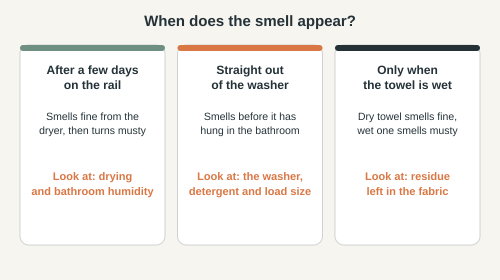
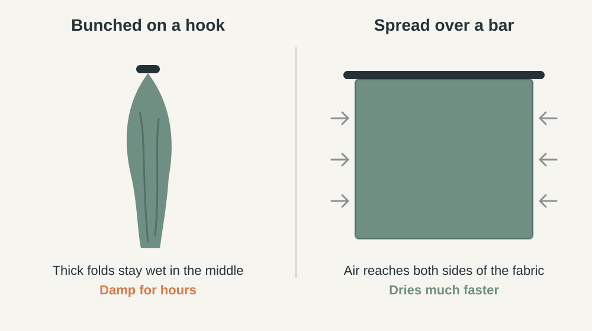

BATHROOM · LAUNDRY
How to Stop Bathroom Towels Smelling Musty
A towel that smells fine from the dryer and musty three days later has a drying problem. One that smells musty straight from the washer has a washing problem. This guide helps you tell which, then fix it.
Short answer: musty towels come from moisture that stays in the fabric too long. Spread the towel so air reaches both sides, run the bathroom fan for 20 minutes after showers, take towels out of the washer soon after the cycle, use the detergent amount on the label, and make sure towels are completely dry before folding.
1. Find the cause with three quick tests
Replacing towels rarely fixes the smell if the cause is still there. Check the pattern first.

- Dry sniff test. Smell a freshly dried towel. If it already smells musty, go to section 4.
- Three-day test. Hang a fresh towel as usual and smell it after three days. If it turns musty, go to section 2.
- Wet test. Dampen a corner of a dry towel with a little water. If it smells musty only when wet, residue is trapped in the fabric. Go to section 5.
2. Help the towel dry faster
Bacteria and mold need moisture. A towel that dries within hours gives them little to work with. One that stays damp for a day or more does not.

- Spread it out. Hang the towel over a bar with the ends even, not bunched on a hook or folded over itself.
- Give each towel its own space. Towels overlapping on one rail dry as slowly as a single bunched one.
- Never pile damp towels in a hamper or on the floor. Hang them to dry first, or wash them the same day.
- Dry them fully before folding. If the middle of a folded towel feels cool or damp, it is not dry. Put it back in the dryer or on a rack.
- Move them out for the day if your bathroom has no window. A rail in a bedroom or hallway often dries a towel faster than the bathroom does.
3. Remove the moisture from the room
Towels dry slowly in air that is already humid. The US EPA suggests keeping indoor humidity below 60%, ideally between 30% and 50%, and says moisture left in a bathroom can feed mold.
- Run the fan for 20 minutes after your shower, as HVI recommends. A run-on timer switch makes this automatic.
- Leave a gap for replacement air. A closed door with no gap starves the fan. Our bathroom condensation guide shows how to test this and how to measure humidity with an inexpensive meter.
- Check where the towel hangs. A rail directly across from the shower catches the most steam. A rail near the fan or door dries better.
4. Fix the washing routine
If towels smell musty straight out of the wash, look at what happens between the cycle and the dryer.
- Empty the washer promptly. Appliance maker Affresh lists leaving damp laundry in the drum as a cause of washer and laundry odors. Move towels to the dryer when the cycle ends.
- Use the detergent amount on the label. Too much detergent leaves residue that rinsing does not remove, and residue is a hiding place for odor. If your machine is high-efficiency (HE), use HE detergent.
- Do not overload the drum. Towels need room to move so water and detergent reach every fold. Fill the drum loosely, not packed.
- Skip fabric softener on towels. Cleaning experts, including CNN Underscored's, say softener leaves a coating that makes towels less absorbent and holds odor.
- Wash at the temperature on the care label. Check the tag before using a hot wash, since heat can fade or shrink some towels.
- Clean the washer itself. Wipe the door gasket on a front-loader, clean the detergent drawer, leave the door open after loads, and run a washer-cleaning cycle with a product made for it, following its label.
5. Rescue towels that already smell
- Rewash the towels on their own, with the label amount of detergent (no more) and no softener. Use the warmest temperature the care label allows.
- Add an extra rinse cycle if your washer has one.
- Dry them completely, on the dryer setting the label allows or outdoors in good weather.
- Run the wet test again (section 1). If the smell is gone, the problem was residue or lingering damp.
- If it remains after two careful rewashes, retire the towel to cleaning rags. Further washing rarely helps worn fabric.
Household remedies: many guides suggest white vinegar or baking soda in the wash. We have not tested them and found no manufacturer or public-agency guidance behind them, so we start with the steps above. If you try one, follow the washer maker's instructions and never mix vinegar with bleach.
6. Safety and when to look further
- Mixing cleaners is dangerous. Never combine bleach with vinegar or other cleaners. Use washer-cleaning products as their label says.
- Washer odor that returns after cleaning, or visible mold on seals you cannot remove, calls for the manufacturer's service line.
- Musty smell in the room too? That points to moisture in the walls or ceiling, not towels. The EPA says mold returns if the moisture source is not fixed. Rule out a leak before you buy anything.
This guide is general information, not professional advice.
7. Common mistakes
- Buying new towels while the bathroom stays damp.
- Adding more detergent to fight a smell, which leaves more residue.
- Using fabric softener to cover the odor.
- Folding towels that are almost dry, trapping moisture in the stack.
- Hanging three towels on one hook.
Frequently Asked Questions
Why do clean towels smell musty so quickly?
Usually because they stay damp too long between uses, or because detergent residue holds odor in the fabric. Use the three tests at the top of this guide to see which one applies.
Should I leave the bathroom fan running after a shower?
Yes. HVI recommends running it for 20 minutes after use. A timer switch does this automatically, and it also helps towels dry.
Can fabric softener fix musty towels?
No. Softener can mask a smell for a short time, and cleaning experts note it leaves a coating on towels. Fix the drying and washing first.
Is it okay to leave towels in the washer overnight?
Avoid it. Wet laundry sitting in a closed drum is a common cause of a musty smell. Move towels to the dryer or a rack soon after the cycle ends.
When should I replace a towel?
When the fabric is thin or worn, or when it still smells after a careful rewash and full drying. A towel that was only damp for too long can usually be recovered.
Sources and last review
Last reviewed: October 7, 2026. Humidity targets come from the US EPA, fan run time from HVI, and washer and laundry odor guidance from Affresh (Whirlpool) and CNN Underscored. Remedy claims we could not trace to an authority are labeled untested.